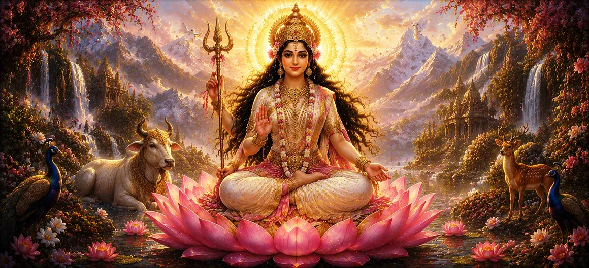

The Manifestation of Goddess Uma
Following the luminous revelation of Goddess Sarasvati in the previous chapter, the forty-ninth chapter of Uma Samhita unfolds the majestic and supreme manifestation of Goddess Uma.
This chapter narrates the glorious appearance of the Divine Mother, the ultimate source of cosmic energy, compassion, and the eternal consort of Lord Shiva.
Through her divine presence, creation attains its supreme spiritual protection, maternal grace, and integration with the absolute reality.
Chapter 49 Highlights
Supreme Divine Mother
Introduces Goddess Uma as the supreme embodiment of primordial cosmic power (Shakti).
Radiant Form
Describes her breathtaking divine brilliance that illuminates all the three worlds.
Union with Lord Shiva
Highlights her eternal connection and inseparable oneness with Lord Shiva.
Maternal Grace & Protection
Emphasizes her boundless compassion and protection extended to all devotees and sages.
Cosmic Equilibrium
Shows how her manifestation restores complete cosmic order and spiritual harmony.
Path to Liberation
Explains how devotion to Uma grants ultimate peace and spiritual liberation (moksha).
Core Topics in This Chapter
- 01 The Anticipation and Preparations for Uma's Appearance →
- 02 The Grand Manifestation of Goddess Uma →
- 03 Divine Splendor and Awe-Inspiring Form →
- 04 The Inseparable Principle of Shiva and Shakti →
- 05 Rejoicing of the Gods, Sages, and Celestial Beings →
- 06 Goddess Uma as the Granter of Boons and Protection →
- 07 Boundless Maternal Compassion for the Universe →
- 08 Deep Esoteric and Philosophical Significance →
- 09 Hymns of Praise Offered by the Devas →
- 10 Transition to the Incarnation of Goddess Shatakshi →
The Anticipation and Preparations for Uma's Appearance
Chapter 49 begins with a sense of divine anticipation filling the cosmos as sages and celestial beings prepare to witness the supreme manifestation of Goddess Uma.
The atmosphere charges with pure spiritual energy and reverent devotion.
The Grand Manifestation of Goddess Uma
Amidst celestial celebrations, Goddess Uma manifests in her full majesty, embodying the absolute power, grace, and nurturing essence of the Divine Mother.
Her appearance instantly fills all realms with supreme peace and auspiciousness.
Divine Splendor and Awe-Inspiring Form
The text vividly describes her breathtaking form adorned with celestial ornaments, radiant garments, and a countenance expressing infinite compassion paired with majestic power.
Her brilliance outshines the sun and moon combined.
The Inseparable Principle of Shiva and Shakti
The narrative underscores that Uma is none other than Shakti in absolute union with Lord Shiva, representing the non-dual truth that consciousness and energy are one.
Together, they sustain the entire wheel of creation, preservation, and dissolution.
Rejoicing of the Gods, Sages, and Celestial Beings
Upon her arrival, all the gods led by Brahma and Vishnu bow in deep reverence, chanting hymns of praise and showering flowers from the heavens in ecstatic devotion.
Celestial music and drums resound across the universe.
Goddess Uma as the Granter of Boons and Protection
Goddess Uma bestows fearlessness, protection, and supreme spiritual boons upon those who surrender to her lotus feet, shielding them from all forms of distress and evil.
Her shelter is the ultimate refuge for sincere seekers.
(Sources: Uma Samhita Chapter 49)
Boundless Maternal Compassion for the Universe
The text highlights her overflowing motherly love, noting that even when cosmic discipline is required, her ultimate motivation is the upliftment and spiritual growth of her children.
She nurtures the cosmos just as a mother nurtures her newborn.
(Sources: Uma Samhita Chapter 49)
Deep Esoteric and Philosophical Significance
Philosophically, Uma represents the awakening of divine inner light (Kundalini / Shakti) within the human soul, bridging individual consciousness with the infinite divine reality.
Her manifestation is the pinnacle of spiritual realization in the Samhita.
(Sources: Uma Samhita Chapter 49)
Hymns of Praise Offered by the Devas
The chapter features sacred hymns chanted by the assembled deities, glorifying her as the mother of the universe, the destroyer of fear, and the bestower of eternal liberation.
These prayers purify the hearts of all who read or listen to them.
(Sources: Uma Samhita Chapter 49)
Transition to the Incarnation of Goddess Shatakshi
Having established the glorious reign and supreme manifestation of Goddess Uma in Chapter 49, the text prepares to unfold the compassionate incarnation of Goddess Shatakshi in Chapter 50.
The divine narrative continues its flow into further compassionate forms of the Divine Mother.
(Sources: Uma Samhita Chapter 49)
Key Teachings of Chapter 49
Supremacy of Divine Mother
Goddess Uma is the supreme source of power, love, and protection across all creation.
Non-Dual Reality
Shiva and Shakti are inseparable, representing the harmonious union of stillness and action.
Unconditional Love
Her maternal grace embraces all beings, offering refuge and solace in times of distress.
Fearlessness & Protection
Surrendering to Uma eradicates all fears of worldly existence and grants inner strength.
Spiritual Awakening
Her manifestation kindles the divine spark within the seeker's heart.
Ultimate Liberation
Devotion to Uma leads the soul directly to eternal peace and union with the Divine.
Spiritual Reflection
Chapter 49 of Uma Samhita reaches the emotional and spiritual zenith of the narrative by presenting the magnificent manifestation of Goddess Uma. As the ultimate Divine Mother and inseparable consort of Lord Shiva, her appearance reminds us that the universe is sustained not merely by force or intellect, but by boundless maternal love and cosmic grace. To meditate upon Goddess Uma is to anchor oneself in the eternal source of security, compassion, and supreme spiritual awakening, preparing the heart for deeper divine mysteries.
Living the Message of Chapter 49
Cultivate an attitude of deep surrender and trust in the Divine Mother during challenging times.
Express compassion, care, and nurturing love toward all living beings as reflections of divine grace.
Recite hymns dedicated to Goddess Uma to invoke inner peace, strength, and protection.
Key Spiritual Concepts
The supreme Divine Mother, primordial energy, and consort of Lord Shiva.
The active dynamic feminine principle and power animating the entire universe.
The non-dual unity of static consciousness (Shiva) and dynamic energy (Shakti).
The divine goddess, revered as the universal mother and source of all blessings.
Ultimate spiritual liberation from the cycle of birth, death, and suffering.
Pure, unswerving devotion directed toward the Divine Mother.
Chapter Summary
Uma Samhita Chapter 49 presents the majestic and grand manifestation of Goddess Uma, the supreme Divine Mother and inseparable consort of Lord Shiva. Her brilliant appearance fills the cosmos with divine splendor, maternal love, and complete spiritual equilibrium. Rejoiced by gods and sages alike, her presence offers ultimate protection, fearlessness, and liberation, paving the way for the compassionate incarnation of Goddess Shatakshi in Chapter 50.
Frequently Asked Questions
① What is the primary focus of Uma Samhita Chapter 49?
The primary focus is the divine manifestation of Goddess Uma, the supreme cosmic mother and consort of Lord Shiva.
② How does Chapter 49 follow Chapter 48?
After the manifestation of Goddess Sarasvati representing supreme knowledge in Chapter 48, Chapter 49 culminates in the majestic appearance of Goddess Uma.
③ What attributes are associated with Goddess Uma in this chapter?
Goddess Uma is associated with supreme divine power, compassion, cosmic creation, and eternal union with Lord Shiva.
④ How does Chapter 49 connect to Chapter 50?
Chapter 49 transitions smoothly into Chapter 50, which details the incarnation of Goddess Shatakshi.
⑤ What is the spiritual significance of Goddess Uma's appearance?
Her appearance represents the full descent of divine grace, protection, and the ultimate nurturing energy of the universe.
⑥ In which languages is this chapter presentation available?
This presentation of Chapter 49 is available in both English and Bengali.
“Adorned in radiant celestial splendor, Goddess Uma manifests as the supreme Divine Mother, eternally united with Lord Shiva to protect and nurture all creation.”
Continue Through Uma Samhita
Chapter 49 reveals the majestic manifestation of Goddess Uma. Proceed into Chapter 50 to explore the incarnation of Goddess Shatakshi.